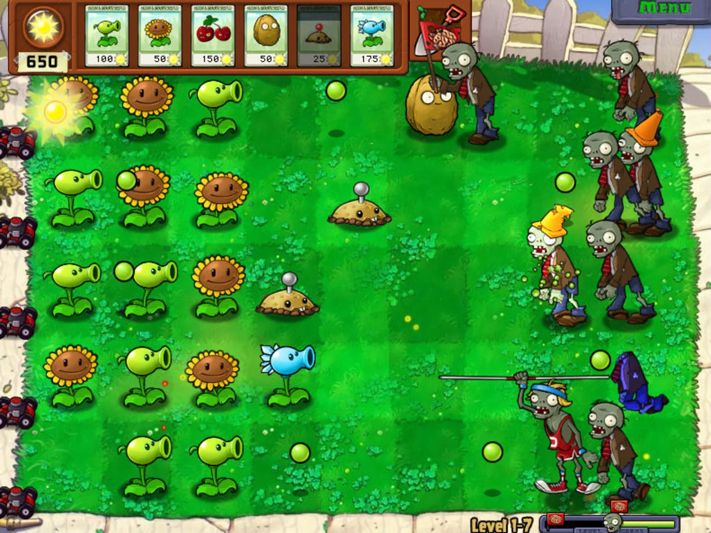
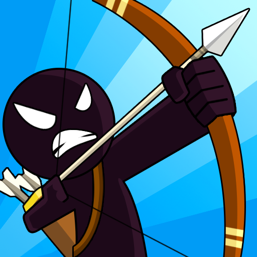
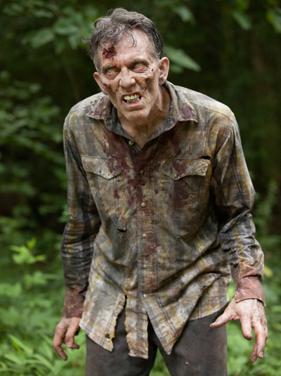
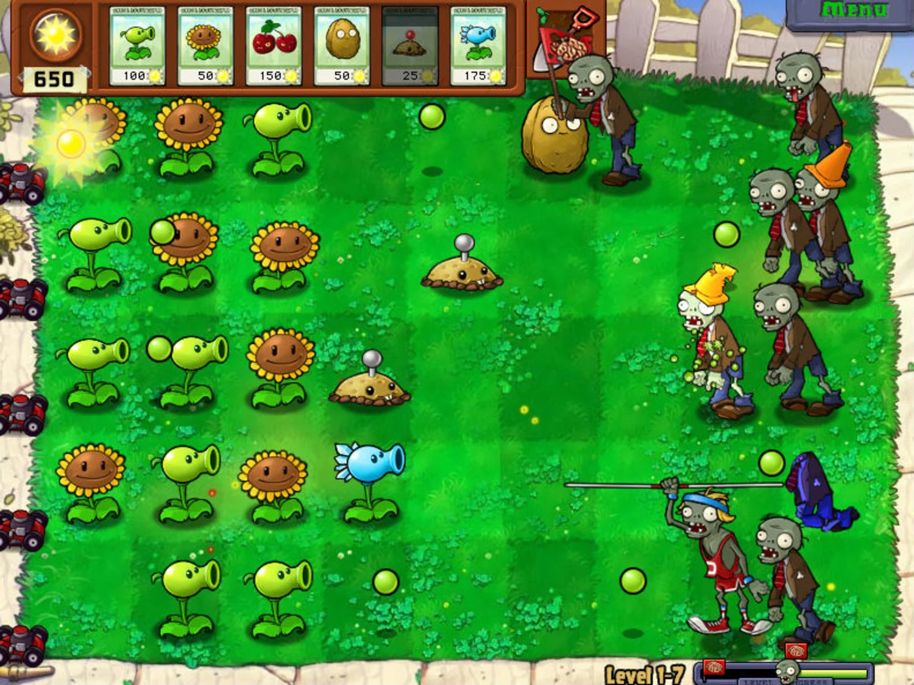
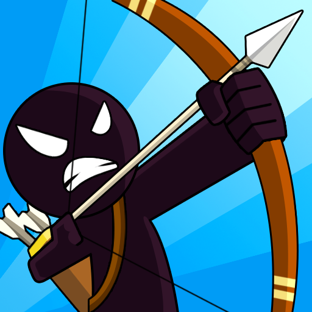
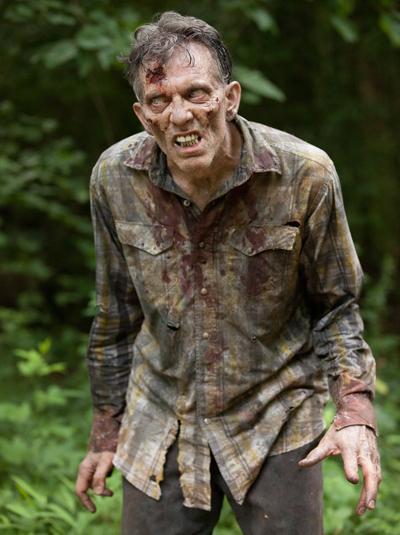
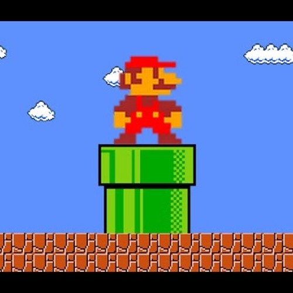
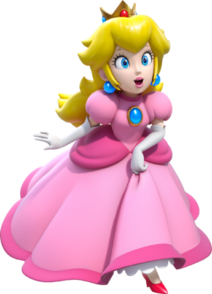
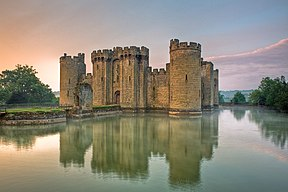

Recent Projects
I have been programming for about 3 and a half years now and so I've gotten the chance to complete some pretty interesting projects both for university courses as well as personal interests.
Walking Deadline
This is one of the projects I completed while taking EECS 281. This project revolved around creating a "Plants Versus Zombie" style game. However, in this game we had to devise an algorithm such that the player would automatically kill the zombie that was the biggest threat to the player by calculting its health as well as its estimated time of arrival. This program used a player that was an archer to kill zombies instead of having plants.
 





Super Mario Simulator
Another project I completed during my time in EECS 281 was a game similar to the famous Super Mario Brothers game. It revolved around a player exploring a castle and trying to find and rescue the damsel in distress. This program also involved an algorithm to find the damsel by using two famous Computer Science search algorithms: Depth First Search (DFS) and Breadth First Search (BFS). The program allowed the player to take pipes to different levels of the castle making the searching algorithms more complicated.
  